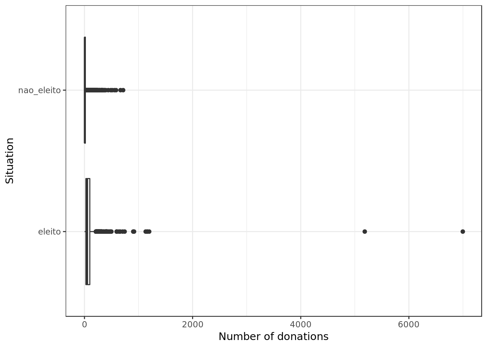

Classification of candidates in Brazilian elections
Introduction
Data Analysis and Classification on a subset of data about polls for the 2006 and 2010 elections in Brazil for the “Câmara Federal de Deputados”. Data was taken from the TSE portal which originally encompassed approximately 7300 candidates.
Data Overview
The variables
The response variable is the variable that you are interested in reaching conclusions about.
A predictor variable is a variable used to predict another variable.
Our response variable will be "situacao", we want to study how well the predictor variables can help predict its behavior and how they impact in the linear regression.Each item corresponds to a candidate, the attributes of each item are as follows:
- ano : Year at which the election took place.
- sequencial_candidato : Sequential ID to map the candidates
- nome : Name of the candidate
- uf : Federate state to which the candidate belongs.
- partido : Political party to which the candidate belongs.
- quantidade_doacoes : Number of donations received during political campaign.
- quantidade_doadores : Number of donors that contributed to the candidate’s political campaign.
- total_receita : Total revenue.
- media_receita : Mean revenue.
- recursos_de_outros_candidatos.comites : Revenue from other candidate’s committees.
- recursos_de_pessoas_fisicas : Revenue from individuals.
- recursos_de_pessoas_juridicas : Revenue from legal entities.
- recursos_proprios : Revenue from personal resources.
- recursos_de_partido_politico : Revenue from political party.
- quantidade_despesas : Number of expenses.
- quantidade_fornecedores : Number of suppliers.
- total_despesa : Total expenditure.
- media_despesa : Mean expenditure.
- cargo : Position.
- sexo : Sex.
- grau : Level of education.
- estado_civil : Marital status.
- ocupacao : Candidate’s occupation up to the election.
- situacao : Whether the candidate was elected.
Loading Data
readr::read_csv(here::here('evidences/train_class.csv'),
progress = FALSE,
local=readr::locale("br"),
col_types = cols(ano = col_integer(),
sequencial_candidato = col_character(),
quantidade_doacoes = col_integer(),
quantidade_doadores = col_integer(),
total_receita = col_double(),
media_receita = col_double(),
recursos_de_outros_candidatos.comites = col_double(),
recursos_de_pessoas_fisicas = col_double(),
recursos_de_pessoas_juridicas = col_double(),
recursos_proprios = col_double(),
`recursos_de_partido_politico` = col_double(),
quantidade_despesas = col_integer(),
quantidade_fornecedores = col_integer(),
total_despesa = col_double(),
media_despesa = col_double(),
situacao = col_character(),
.default = col_character())) %>%
mutate(sequencial_candidato = as.numeric(sequencial_candidato),
estado_civil = as.factor(estado_civil),
ocupacao = as.factor(ocupacao),
situacao = as.factor(situacao),
partido = as.factor(partido),
grau = as.factor(grau),
sexo = as.factor(sexo),
uf = as.factor(uf)) -> data
data %>%
glimpse()## Observations: 7,622
## Variables: 24
## $ ano <int> 2006, 2006, 2006, 2006, 20…
## $ sequencial_candidato <dbl> 10001, 10002, 10002, 10002…
## $ nome <chr> "JOSÉ LUIZ NOGUEIRA DE SOU…
## $ uf <fct> AP, RO, AP, MS, RO, AP, PI…
## $ partido <fct> PT, PT, PT, PRONA, PT, PT,…
## $ quantidade_doacoes <int> 6, 13, 17, 6, 48, 8, 6, 14…
## $ quantidade_doadores <int> 6, 13, 16, 6, 48, 8, 6, 7,…
## $ total_receita <dbl> 16600.00, 22826.00, 158120…
## $ media_receita <dbl> 2766.67, 1755.85, 9301.22,…
## $ recursos_de_outros_candidatos.comites <dbl> 0.00, 6625.00, 2250.00, 0.…
## $ recursos_de_pessoas_fisicas <dbl> 9000.00, 15000.00, 34150.0…
## $ recursos_de_pessoas_juridicas <dbl> 6300.00, 1000.00, 62220.80…
## $ recursos_proprios <dbl> 1300.00, 201.00, 59500.00,…
## $ recursos_de_partido_politico <dbl> 0, 0, 0, 0, 0, 0, 0, 0, 0,…
## $ quantidade_despesas <int> 14, 24, 123, 8, 133, 38, 9…
## $ quantidade_fornecedores <int> 14, 23, 108, 8, 120, 37, 9…
## $ total_despesa <dbl> 16583.60, 20325.99, 146011…
## $ media_despesa <dbl> 1184.54, 846.92, 1187.09, …
## $ cargo <chr> "DEPUTADO FEDERAL", "DEPUT…
## $ sexo <fct> MASCULINO, FEMININO, FEMIN…
## $ grau <fct> ENSINO MÉDIO COMPLETO, SUP…
## $ estado_civil <fct> CASADO(A), SOLTEIRO(A), VI…
## $ ocupacao <fct> "VEREADOR", "SERVIDOR PÚBL…
## $ situacao <fct> nao_eleito, nao_eleito, el…data %>%
map_df(function(x) sum(is.na(x))) %>%
gather(feature, num_nulls) %>%
arrange(desc(num_nulls))## # A tibble: 24 x 2
## feature num_nulls
## <chr> <int>
## 1 ano 0
## 2 sequencial_candidato 0
## 3 nome 0
## 4 uf 0
## 5 partido 0
## 6 quantidade_doacoes 0
## 7 quantidade_doadores 0
## 8 total_receita 0
## 9 media_receita 0
## 10 recursos_de_outros_candidatos.comites 0
## # … with 14 more rowsData Exploration
Imbalance on class distribution
data %>%
ggplot(aes(situacao)) +
geom_bar() +
labs(x="Situation", y="Absolute Frequency")data %>%
group_by(situacao) %>%
summarise(num = n()) %>%
ungroup() %>%
mutate(total = sum(num),
proportion = num/total)## # A tibble: 2 x 4
## situacao num total proportion
## <fct> <int> <int> <dbl>
## 1 eleito 1026 7622 0.135
## 2 nao_eleito 6596 7622 0.865There’s a strong imbalance in the class distribution of the dataset with around 13% of the entries in the class “eleito” (elected).
- This imbalance can lead to a bias in the model that will learn to overlook the less frequent classes. Such bias can have a negative impact in the model generalization and its performance.
- We can restore balance by removing instances from the most frequent class \(undersampling\).
- We can restore balance by adding instances from the most frequent class \(oversampling\).
data %>%
select(-ano,
-sequencial_candidato,
-nome) %>%
select(
quantidade_doacoes,
quantidade_doadores,
total_receita,
media_receita,
recursos_de_outros_candidatos.comites,
recursos_de_pessoas_fisicas,
recursos_de_pessoas_juridicas,
recursos_proprios,
`recursos_de_partido_politico`) %>%
na.omit() %>%
ggcorr(palette = "RdBu", label = TRUE,
hjust = 0.95, label_size = 3,size = 3,
nbreaks = 5, layout.exp = 5) +
ggtitle("Correlation plot for employed variables")- Predictors such as quantidade_doacoes (Number of Donations) and quantidade_doadores (Number of Donors) are highly correlated and therefore redundant.
data %>%
ggplot(aes(situacao,recursos_proprios)) +
geom_boxplot() +
coord_flip() +
labs(y="Revenue from personal resources (R$)", x="Situation")data %>%
ggplot(aes(situacao,
recursos_de_partido_politico)) +
geom_boxplot() +
coord_flip() +
labs(y="Revenue from political party. (R$)", x="Situation")
- Candidates who were elected had overall more revenue form their political party
data %>%
ggplot(aes(situacao,
recursos_de_outros_candidatos.comites)) +
geom_boxplot() +
coord_flip() +
labs(y="Revenue from other candidate’s committees (R$)", x="Situation")data %>%
ggplot(aes(situacao,
recursos_de_pessoas_fisicas)) +
geom_boxplot() +
coord_flip() +
labs(y="Revenue from individuals (R$)", x="Situation")- Candidates who were elected had overall more revenue form individuals.
data %>%
ggplot(aes(situacao,
recursos_de_pessoas_juridicas)) +
geom_boxplot() +
coord_flip() +
labs(y="Revenue from legal entities (R$)", x="Situation")- Financial support from legal entities (such as companies) seems to have been a game changer on whether a candidate was elected or not.
data %>%
ggplot(aes(situacao,
quantidade_doacoes)) +
geom_boxplot() +
coord_flip() +
labs(y="Number of donations", x="Situation")
data %>%
ggplot(aes(situacao,
quantidade_doadores)) +
geom_boxplot() +
coord_flip() +
labs(y="Number of donators", x="Situation")data %>%
ggplot(aes(situacao,
media_receita)) +
geom_boxplot() +
coord_flip() +
labs(y="Mean expenditure", x="Situation")data %>%
ggplot(aes(situacao,
total_receita)) +
geom_boxplot() +
coord_flip() +
labs(y="Total expenditure", x="Situation")- Who got elected spent a lot more, once again money seems to be the real gatekeeper.
data %>%
ggplot() +
geom_mosaic(aes(x = product(sexo, situacao),
fill=sexo)) +
theme(axis.title.y=element_blank(),
axis.text.y=element_blank(),
axis.ticks.y=element_blank()) +
guides(fill = guide_legend(title = "Sex")) +
labs(x="Situation") - Relatively, we see more men being elected.
data %>%
ggplot() +
geom_mosaic(aes(x = product(grau, situacao),
fill=grau)) +
theme(axis.title.y=element_blank(),
axis.text.y=element_blank(),
axis.ticks.y=element_blank()) +
guides(fill = guide_legend(title = "Level of education")) +
labs(x="Situation") - Those with a better level of education seem to have had the upper hand in the elections.
data %>%
ggplot() +
geom_mosaic(aes(x = product(estado_civil, situacao),
fill=estado_civil)) +
theme(axis.title.y=element_blank(),
axis.text.y=element_blank(),
axis.ticks.y=element_blank()) +
guides(fill = guide_legend(title = "Marital Status")) +
labs(x="Situation") - Relatively, married people are more likely to be elected in this group.
Preparing data
Splitting data
set.seed(107)
data$id <- 1:nrow(data)
data %>%
dplyr::sample_frac(.8) -> train
cat("#### Train Shape",
"\n##### Observations: ",nrow(train),
"\n##### Variables: ",ncol(train))## #### Train Shape
## ##### Observations: 6098
## ##### Variables: 25dplyr::anti_join(data,
train,
by = 'id') -> test
cat("#### Test Shape",
"\n##### Observations: ",nrow(test),
"\n##### Variables: ",ncol(test))## #### Test Shape
## ##### Observations: 1524
## ##### Variables: 25train %>%
select(-ano,-nome,-id,-sequencial_candidato) -> train
test %>%
select(-ano,-nome,-id,-sequencial_candidato) -> testtrain %>%
dplyr::select_if(.,is.numeric) -> train.numeric
train %>%
dplyr::select_if(.,negate(is.numeric)) -> train.categorical
test %>%
dplyr::select_if(.,is.numeric) -> test.numeric
test %>%
dplyr::select_if(.,negate(is.numeric)) -> test.categoricalScale and Center
train.numeric %>%
preProcess(.,method = c("center","scale")) -> processParams
processParams %>%
predict(.,train.numeric) -> train.numeric
processParams %>%
predict(.,test.numeric) -> test.numeric
processParams## Created from 6098 samples and 13 variables
##
## Pre-processing:
## - centered (13)
## - ignored (0)
## - scaled (13)One Hot Encoding
train.numeric %>%
dplyr::bind_cols(train.categorical) -> train
test.numeric %>%
dplyr::bind_cols(test.categorical) -> testencoding <- build_encoding(dataSet = train,
cols = c("uf","sexo","grau","ocupacao",
"partido","estado_civil"),
verbose = F)
train <- one_hot_encoder(dataSet = train,
encoding = encoding,
drop = TRUE,
verbose = F)
cat("#### Train Shape",
"\n##### Observations: ",nrow(train),
"\n##### Variables: ",ncol(train))Train Shape
Observations: 6098
Variables: 263
test <- one_hot_encoder(dataSet = test,
encoding = encoding,
drop = TRUE,
verbose = F)
cat("#### Data Shape",
"\n##### Observations: ",nrow(test),
"\n##### Variables: ",ncol(test))## #### Data Shape
## ##### Observations: 1524
## ##### Variables: 263Near Zero Variance Predictors
train %>%
nearZeroVar(saveMetrics = TRUE) %>%
tibble::rownames_to_column("variable") %>%
filter(nzv == T) %>%
pull(variable) -> near_zero_vars
train %>%
select(-one_of(near_zero_vars)) -> train
test %>%
select(-one_of(near_zero_vars)) -> test
near_zero_vars %>%
glimpse() ## chr [1:224] "cargo" "uf.AC" "uf.AL" "uf.AM" "uf.AP" "uf.BA" "uf.CE" ...Unbalanced dataset
- In this section we shall test the candidate models without applying any sort of undersampling or oversampling to the employed data
Logistic Regression
f1 <- function(data, lev = NULL, model = NULL) {
f1_val <- F1_Score(y_pred = data$pred,
y_true = data$obs,
positive = lev[1])
c(F1 = f1_val)
}
F_Measure <- function(expected, predicted, ...) {
data.frame(expected=expected,
prediction=predicted) %>%
mutate(TP = ifelse(expected == "eleito" &
prediction == "eleito",1,0),
TN = ifelse(expected == "nao_eleito" &
prediction == "nao_eleito",1,0),
FN = ifelse(expected == "eleito" &
prediction == "nao_eleito",1,0),
FP = ifelse(expected == "nao_eleito" &
prediction == "eleito",1,0)) -> result
result %>%
summarize(TP = sum(TP),
TN = sum(TN),
FP = sum(FP),
FN = sum(FN)) %>%
mutate(recall = TP / (TP + FN),
precision = TP / (TP + FP),
accuracy = (TP + TN)/(TP + TN + FP + FN),
f_measure = 2 * (precision * recall) / (precision + recall)) -> result
return(result)
}rlGrid <- expand.grid( cost = c(200,2,0.02),
loss = c("L1", "L2_dual", "L2_primal"),
epsilon = c(0.001,0.01) )
train %>%
caret::train(situacao ~ .,
data= .,
method = "regLogistic",
metric = "F1",
trControl = trainControl(method = "boot",
classProbs = TRUE,
summaryFunction = f1,
savePredictions = "final"),
tuneGrid = rlGrid) -> model.rlmodel.rl## Regularized Logistic Regression
##
## 6098 samples
## 38 predictors
## 2 classes: 'eleito', 'nao_eleito'
##
## No pre-processing
## Resampling: Bootstrapped (25 reps)
## Summary of sample sizes: 6098, 6098, 6098, 6098, 6098, 6098, ...
## Resampling results across tuning parameters:
##
## cost loss epsilon F1
## 2e-02 L1 0.001 0.5841929
## 2e-02 L1 0.010 0.5850193
## 2e-02 L2_dual 0.001 0.5994658
## 2e-02 L2_dual 0.010 0.5994658
## 2e-02 L2_primal 0.001 0.5994150
## 2e-02 L2_primal 0.010 0.6000753
## 2e+00 L1 0.001 0.6342838
## 2e+00 L1 0.010 0.6359184
## 2e+00 L2_dual 0.001 0.6333125
## 2e+00 L2_dual 0.010 0.6333125
## 2e+00 L2_primal 0.001 0.6332243
## 2e+00 L2_primal 0.010 0.6335837
## 2e+02 L1 0.001 0.6329757
## 2e+02 L1 0.010 0.6355253
## 2e+02 L2_dual 0.001 0.6445493
## 2e+02 L2_dual 0.010 0.6487011
## 2e+02 L2_primal 0.001 0.6330532
## 2e+02 L2_primal 0.010 0.6344372
##
## F1 was used to select the optimal model using the largest value.
## The final values used for the model were cost = 200, loss = L2_dual
## and epsilon = 0.01.model.rl %$%
results %>%
mutate(cost=as.factor(cost)) %>%
ggplot(aes(epsilon,F1,
color=cost)) +
geom_line() +
geom_point() +
labs(y= "F1 (Bootstrap)", x="Tolerance") +
facet_wrap(. ~ loss, labeller = "label_both") +
guides(color = guide_legend(title = "Cost")) +
theme(axis.text.x = element_text(angle = 60, hjust = 1))- The hyper-parameter Loss seems to be the particularly meaningful for the Logistic Regression performance in this problem.
model.rl %>%
varImp() %$%
importance %>%
as.data.frame() %>%
rownames_to_column(var="Feature") %>%
mutate(Feature = tolower(Feature)) %>%
ggplot() +
geom_col(aes(x = reorder(Feature,eleito),y = eleito),
position = position_dodge(width=0.8),width=0.6) +
labs(x="Feature", y="Overall Importance") +
coord_flip()- Total Receita (Total Revenue), Total Despesa (Total Expenditure) and Recursos de pessoas jurídicas (Revenue from Legal Entities) are together the three most important features in the model.
- Despite regularization a lot of features were employed, however many were considered less important.
Quality metric
Train and Validation
model.rl %$%
pred %>%
F_Measure(expected = .$obs,
predicted = .$pred)## TP TN FP FN recall precision accuracy f_measure
## 1 4462 46905 1807 3006 0.5974826 0.7117563 0.9143289 0.6496324- A decent although uninspiring result.
Test
test %>%
select(-situacao) %>%
predict(object=model.rl,.) %>%
F_Measure(test$situacao,.)## TP TN FP FN recall precision accuracy f_measure
## 1 115 1268 43 98 0.5399061 0.7278481 0.9074803 0.6199461- The test result is rather close to the train/validation results, this is a good sign. However, the model results are not particularly promising.
K nearest neighbours
neighborsGrid <- expand.grid(.k = seq(from=1, to=50, by=1))
train %>%
train(situacao ~ .,
data = .,
metric = "F1",
method = "knn",
na.action = na.omit,
tuneGrid = neighborsGrid,
trControl = trainControl(method = "boot",
classProbs = TRUE,
summaryFunction = f1,
savePredictions = "final")) -> model.knnmodel.knn## k-Nearest Neighbors
##
## 6098 samples
## 38 predictors
## 2 classes: 'eleito', 'nao_eleito'
##
## No pre-processing
## Resampling: Bootstrapped (25 reps)
## Summary of sample sizes: 6098, 6098, 6098, 6098, 6098, 6098, ...
## Resampling results across tuning parameters:
##
## k F1
## 1 0.5824759
## 2 0.5875895
## 3 0.6007862
## 4 0.6061060
## 5 0.6144416
## 6 0.6200697
## 7 0.6241954
## 8 0.6311975
## 9 0.6356655
## 10 0.6336647
## 11 0.6366401
## 12 0.6399036
## 13 0.6392513
## 14 0.6434043
## 15 0.6464512
## 16 0.6462525
## 17 0.6458874
## 18 0.6491884
## 19 0.6477945
## 20 0.6480499
## 21 0.6472381
## 22 0.6445113
## 23 0.6465735
## 24 0.6457208
## 25 0.6461998
## 26 0.6482132
## 27 0.6486326
## 28 0.6496663
## 29 0.6500242
## 30 0.6499457
## 31 0.6499628
## 32 0.6509105
## 33 0.6506456
## 34 0.6504918
## 35 0.6509949
## 36 0.6496751
## 37 0.6487479
## 38 0.6485889
## 39 0.6476139
## 40 0.6484988
## 41 0.6487328
## 42 0.6487954
## 43 0.6478067
## 44 0.6501784
## 45 0.6495676
## 46 0.6487787
## 47 0.6490995
## 48 0.6492741
## 49 0.6478356
## 50 0.6486335
##
## F1 was used to select the optimal model using the largest value.
## The final value used for the model was k = 35.model.knn %$%
bestTune %$%
k -> bestParameter
model.knn %$%
results %>%
ggplot(aes(k,F1)) +
geom_vline(xintercept = bestParameter,
color = "red") +
geom_point(color="#0D98E8") +
geom_line(color="#0D98E8") +
labs(x="#Neighbors",
y="F1 (Bootstrap)") model.knn %>%
varImp() %$%
importance %>%
as.data.frame() %>%
rownames_to_column(var="Feature") %>%
mutate(Feature = tolower(Feature)) %>%
ggplot() +
geom_col(aes(x = reorder(Feature,eleito),y = eleito),
position = position_dodge(width=0.8),width=0.6) +
labs(x="Feature", y="Overall Importance") +
coord_flip()
- Total Receita (Total Revenue), Total Despesa (Total Expenditure) and Recursos de pessoas jurídicas (Revenue from Legal Entities) are together the three most important features in this model as well.
- The KNN algorithm made use of almost all predictors, this may be a bad sign.
Quality metric
Train and Validation
model.knn %$%
pred %>%
F_Measure(expected = .$obs,
predicted = .$pred)## TP TN FP FN recall precision accuracy f_measure
## 1 4533 46832 2009 2845 0.6143941 0.6929074 0.9136591 0.6512931- Here we have slightly better results than those of the Logistic Regression.
Test
test %>%
select(-situacao) %>%
predict(object=model.knn,.) %>%
F_Measure(test$situacao,.)## TP TN FP FN recall precision accuracy f_measure
## 1 122 1259 52 91 0.57277 0.7011494 0.906168 0.630491- We have modest results, but they are consonant with those from train/test.
- This suggests that the KNN model may be too simple for this particular instance, and bias would be the predominant component in the model error.
Decision Tree
rpart.grid <- expand.grid(.cp = seq(from=0, to=0.1, by=0.005))
caret::train(x = select(train, -situacao),
y = train$situacao,
metric = "F1",
method = "rpart",
na.action = na.omit,
tuneGrid = rpart.grid,
trControl = trainControl(method = "boot",
classProbs = TRUE,
summaryFunction = f1,
savePredictions = "final")) -> model.treemodel.tree## CART
##
## 6098 samples
## 38 predictors
## 2 classes: 'eleito', 'nao_eleito'
##
## No pre-processing
## Resampling: Bootstrapped (25 reps)
## Summary of sample sizes: 6098, 6098, 6098, 6098, 6098, 6098, ...
## Resampling results across tuning parameters:
##
## cp F1
## 0.000 0.6222605
## 0.005 0.6597754
## 0.010 0.6730765
## 0.015 0.6737400
## 0.020 0.6684035
## 0.025 0.6684085
## 0.030 0.6668214
## 0.035 0.6681258
## 0.040 0.6681258
## 0.045 0.6681258
## 0.050 0.6661671
## 0.055 0.6661671
## 0.060 0.6712018
## 0.065 0.6699034
## 0.070 0.6700850
## 0.075 0.6702300
## 0.080 0.6717618
## 0.085 0.6726706
## 0.090 0.6632295
## 0.095 0.6726590
## 0.100 0.6660222
##
## F1 was used to select the optimal model using the largest value.
## The final value used for the model was cp = 0.015.model.tree %$%
bestTune %$%
cp -> bestParameter
model.tree %$%
results %>%
ggplot(aes(cp,F1)) +
geom_vline(xintercept = bestParameter,
color = "red") +
geom_point(color="#0D98E8") +
geom_line(color="#0D98E8") +
labs(x="Complexity Parameter",
y="F1 (Bootstrap)") model.tree %$%
finalModel %>%
fancyRpartPlot(sub="")- The best performing tree seems simple yet reasonable.
- This tree may be in the border of an underfitting.
model.tree %>%
varImp() %$%
importance %>%
as.data.frame() %>%
rownames_to_column(var="Feature") %>%
mutate(Feature = tolower(Feature)) %>%
ggplot() +
geom_col(aes(x = reorder(Feature,Overall),y = Overall),
position = position_dodge(width=0.8),width=0.6) +
labs(x="Feature", y="Overall Importance") +
coord_flip()- Total Receita (Total Revenue), Total Despesa (Total Expenditure) and Recursos de pessoas jurídicas (Revenue from Legal Entities) are together the three most important features in this model as well.
- The tree used very few predictors which may indicate an underfitting, or simply that the tree captured the few meaningful predictors.
Quality metric
Train and Validation
model.tree %$%
pred %>%
F_Measure(expected = .$obs,
predicted = .$pred)## TP TN FP FN recall precision accuracy f_measure
## 1 4922 46495 2084 2667 0.6485703 0.7025407 0.9154145 0.6744776- Here we have surprisingly good results considering the simplicity of the tree.
Test
test %>%
select(-situacao) %>%
predict(object=model.tree,.) %>%
F_Measure(test$situacao,.)## TP TN FP FN recall precision accuracy f_measure
## 1 128 1252 59 85 0.600939 0.684492 0.9055118 0.64- We have slightly better results than those seen till now, on top of that they are consonant with those from train/test.
AdaBoost
train(x = select(train, -situacao),
y = train$situacao,
metric = "F1",
na.action = na.exclude,
method='adaboost',
tuneLength=2,
trControl = trainControl(savePredictions = "final",
summaryFunction = f1,
classProbs = TRUE,
method = "boot")) -> model.adamodel.ada## AdaBoost Classification Trees
##
## 6098 samples
## 38 predictors
## 2 classes: 'eleito', 'nao_eleito'
##
## No pre-processing
## Resampling: Bootstrapped (25 reps)
## Summary of sample sizes: 6098, 6098, 6098, 6098, 6098, 6098, ...
## Resampling results across tuning parameters:
##
## nIter method F1
## 50 Adaboost.M1 0.6634637
## 50 Real adaboost 0.6610069
## 100 Adaboost.M1 0.6645724
## 100 Real adaboost 0.6639414
##
## F1 was used to select the optimal model using the largest value.
## The final values used for the model were nIter = 100 and method
## = Adaboost.M1.model.ada %$%
results %>%
ggplot(aes(nIter,F1,
color=as.factor(method))) +
geom_point(shape=1) +
geom_line() +
labs(x="# Trees",y="F1 (Bootstrap)") +
guides(color = guide_legend(title = "Method"))Train and Validation
model.ada %$%
pred %>%
F_Measure(expected = .$obs,
predicted = .$pred)## TP TN FP FN recall precision accuracy f_measure
## 1 4843 46233 2236 2644 0.6468545 0.6841362 0.9127886 0.6649732- Here we have better results than what we have seen so far.
Test
test %>%
select(-situacao) %>%
predict(object=model.ada,.) %>%
F_Measure(test$situacao,.)## TP TN FP FN recall precision accuracy f_measure
## 1 136 1250 61 77 0.6384977 0.6903553 0.9094488 0.6634146- The loss in the quality metric going from train/validation to test was small enough.
- This suggest that the model did in fact fit the behavior of the problem and not noise.
Applying Oversample (SMOTE)
train %>%
SMOTE(situacao ~ .,
data = .,
perc.over = 200,
perc.under=200) -> oversampled
cat("#### Train Shape",
"\n##### Observations: ",nrow(oversampled),
"\n##### Variables: ",ncol(oversampled))## #### Train Shape
## ##### Observations: 5691
## ##### Variables: 39oversampled %>%
group_by(situacao) %>%
summarise(num = n()) %>%
ungroup() %>%
mutate(total = sum(num),
proportion = num/total)## # A tibble: 2 x 4
## situacao num total proportion
## <fct> <int> <int> <dbl>
## 1 eleito 2439 5691 0.429
## 2 nao_eleito 3252 5691 0.571- BY means of SMOTE we have reduce the class imbalance considerably
Logistic Regression with SMOTE
rlGrid <- expand.grid( cost = c(0.02,0.1,2,20,100,200),
loss = c("L1", "L2_dual", "L2_primal"),
epsilon = seq(from=0.001,to=0.1, by=0.005) )
oversampled %>%
caret::train(situacao ~ .,
data= .,
method = "regLogistic",
metric = "F1",
trControl = trainControl(method = "boot",
classProbs = TRUE,
summaryFunction = f1,
savePredictions = "final"),
tuneGrid = rlGrid) -> model.rl.smotemodel.rl.smote## Regularized Logistic Regression
##
## 5691 samples
## 38 predictors
## 2 classes: 'eleito', 'nao_eleito'
##
## No pre-processing
## Resampling: Bootstrapped (25 reps)
## Summary of sample sizes: 5691, 5691, 5691, 5691, 5691, 5691, ...
## Resampling results across tuning parameters:
##
## cost loss epsilon F1
## 2e-02 L1 0.001 0.8609407
## 2e-02 L1 0.006 0.8609313
## 2e-02 L1 0.011 0.8611976
## 2e-02 L1 0.016 0.8625802
## 2e-02 L1 0.021 0.8626373
## 2e-02 L1 0.026 0.8616010
## 2e-02 L1 0.031 0.8630162
## 2e-02 L1 0.036 0.8624694
## 2e-02 L1 0.041 0.8631067
## 2e-02 L1 0.046 0.8626822
## 2e-02 L1 0.051 0.8635124
## 2e-02 L1 0.056 0.8625129
## 2e-02 L1 0.061 0.8616411
## 2e-02 L1 0.066 0.8628480
## 2e-02 L1 0.071 0.8607301
## 2e-02 L1 0.076 0.8606394
## 2e-02 L1 0.081 0.8599239
## 2e-02 L1 0.086 0.8583560
## 2e-02 L1 0.091 0.8594978
## 2e-02 L1 0.096 0.8596137
## 2e-02 L2_dual 0.001 0.8692919
## 2e-02 L2_dual 0.006 0.8692919
## 2e-02 L2_dual 0.011 0.8692919
## 2e-02 L2_dual 0.016 0.8692919
## 2e-02 L2_dual 0.021 0.8692919
## 2e-02 L2_dual 0.026 0.8693178
## 2e-02 L2_dual 0.031 0.8692919
## 2e-02 L2_dual 0.036 0.8692919
## 2e-02 L2_dual 0.041 0.8692919
## 2e-02 L2_dual 0.046 0.8692919
## 2e-02 L2_dual 0.051 0.8693178
## 2e-02 L2_dual 0.056 0.8692919
## 2e-02 L2_dual 0.061 0.8692659
## 2e-02 L2_dual 0.066 0.8692245
## 2e-02 L2_dual 0.071 0.8692917
## 2e-02 L2_dual 0.076 0.8692504
## 2e-02 L2_dual 0.081 0.8692655
## 2e-02 L2_dual 0.086 0.8692659
## 2e-02 L2_dual 0.091 0.8692506
## 2e-02 L2_dual 0.096 0.8692299
## 2e-02 L2_primal 0.001 0.8691731
## 2e-02 L2_primal 0.006 0.8691530
## 2e-02 L2_primal 0.011 0.8691018
## 2e-02 L2_primal 0.016 0.8691217
## 2e-02 L2_primal 0.021 0.8693620
## 2e-02 L2_primal 0.026 0.8689987
## 2e-02 L2_primal 0.031 0.8690268
## 2e-02 L2_primal 0.036 0.8690268
## 2e-02 L2_primal 0.041 0.8686480
## 2e-02 L2_primal 0.046 0.8687025
## 2e-02 L2_primal 0.051 0.8687291
## 2e-02 L2_primal 0.056 0.8687746
## 2e-02 L2_primal 0.061 0.8686967
## 2e-02 L2_primal 0.066 0.8686967
## 2e-02 L2_primal 0.071 0.8686967
## 2e-02 L2_primal 0.076 0.8691729
## 2e-02 L2_primal 0.081 0.8691489
## 2e-02 L2_primal 0.086 0.8688481
## 2e-02 L2_primal 0.091 0.8681732
## 2e-02 L2_primal 0.096 0.8672731
## 1e-01 L1 0.001 0.8702722
## 1e-01 L1 0.006 0.8702344
## 1e-01 L1 0.011 0.8697115
## 1e-01 L1 0.016 0.8693376
## 1e-01 L1 0.021 0.8687247
## 1e-01 L1 0.026 0.8689375
## 1e-01 L1 0.031 0.8677390
## 1e-01 L1 0.036 0.8671255
## 1e-01 L1 0.041 0.8672929
## 1e-01 L1 0.046 0.8665229
## 1e-01 L1 0.051 0.8660311
## 1e-01 L1 0.056 0.8665171
## 1e-01 L1 0.061 0.8661272
## 1e-01 L1 0.066 0.8651477
## 1e-01 L1 0.071 0.8654155
## 1e-01 L1 0.076 0.8650495
## 1e-01 L1 0.081 0.8649273
## 1e-01 L1 0.086 0.8653474
## 1e-01 L1 0.091 0.8638414
## 1e-01 L1 0.096 0.8623133
## 1e-01 L2_dual 0.001 0.8712078
## 1e-01 L2_dual 0.006 0.8712078
## 1e-01 L2_dual 0.011 0.8712078
## 1e-01 L2_dual 0.016 0.8712078
## 1e-01 L2_dual 0.021 0.8712078
## 1e-01 L2_dual 0.026 0.8712078
## 1e-01 L2_dual 0.031 0.8712078
## 1e-01 L2_dual 0.036 0.8712078
## 1e-01 L2_dual 0.041 0.8712078
## 1e-01 L2_dual 0.046 0.8712078
## 1e-01 L2_dual 0.051 0.8712078
## 1e-01 L2_dual 0.056 0.8712078
## 1e-01 L2_dual 0.061 0.8712078
## 1e-01 L2_dual 0.066 0.8712078
## 1e-01 L2_dual 0.071 0.8712078
## 1e-01 L2_dual 0.076 0.8712078
## 1e-01 L2_dual 0.081 0.8712078
## 1e-01 L2_dual 0.086 0.8712078
## 1e-01 L2_dual 0.091 0.8712078
## 1e-01 L2_dual 0.096 0.8712078
## 1e-01 L2_primal 0.001 0.8711552
## 1e-01 L2_primal 0.006 0.8711150
## 1e-01 L2_primal 0.011 0.8711812
## 1e-01 L2_primal 0.016 0.8712198
## 1e-01 L2_primal 0.021 0.8707716
## 1e-01 L2_primal 0.026 0.8703000
## 1e-01 L2_primal 0.031 0.8696542
## 1e-01 L2_primal 0.036 0.8700200
## 1e-01 L2_primal 0.041 0.8693244
## 1e-01 L2_primal 0.046 0.8694353
## 1e-01 L2_primal 0.051 0.8692169
## 1e-01 L2_primal 0.056 0.8692094
## 1e-01 L2_primal 0.061 0.8696062
## 1e-01 L2_primal 0.066 0.8694090
## 1e-01 L2_primal 0.071 0.8694090
## 1e-01 L2_primal 0.076 0.8690325
## 1e-01 L2_primal 0.081 0.8687058
## 1e-01 L2_primal 0.086 0.8692854
## 1e-01 L2_primal 0.091 0.8692854
## 1e-01 L2_primal 0.096 0.8690005
## 2e+00 L1 0.001 0.8746356
## 2e+00 L1 0.006 0.8740411
## 2e+00 L1 0.011 0.8728410
## 2e+00 L1 0.016 0.8723746
## 2e+00 L1 0.021 0.8714145
## 2e+00 L1 0.026 0.8706518
## 2e+00 L1 0.031 0.8689071
## 2e+00 L1 0.036 0.8689696
## 2e+00 L1 0.041 0.8689532
## 2e+00 L1 0.046 0.8676027
## 2e+00 L1 0.051 0.8673227
## 2e+00 L1 0.056 0.8661709
## 2e+00 L1 0.061 0.8661957
## 2e+00 L1 0.066 0.8664264
## 2e+00 L1 0.071 0.8660567
## 2e+00 L1 0.076 0.8646124
## 2e+00 L1 0.081 0.8657408
## 2e+00 L1 0.086 0.8636237
## 2e+00 L1 0.091 0.8639137
## 2e+00 L1 0.096 0.8625814
## 2e+00 L2_dual 0.001 0.8742088
## 2e+00 L2_dual 0.006 0.8742088
## 2e+00 L2_dual 0.011 0.8742088
## 2e+00 L2_dual 0.016 0.8742088
## 2e+00 L2_dual 0.021 0.8742088
## 2e+00 L2_dual 0.026 0.8742088
## 2e+00 L2_dual 0.031 0.8742088
## 2e+00 L2_dual 0.036 0.8742088
## 2e+00 L2_dual 0.041 0.8742088
## 2e+00 L2_dual 0.046 0.8742088
## 2e+00 L2_dual 0.051 0.8742088
## 2e+00 L2_dual 0.056 0.8742088
## 2e+00 L2_dual 0.061 0.8742088
## 2e+00 L2_dual 0.066 0.8742088
## 2e+00 L2_dual 0.071 0.8742088
## 2e+00 L2_dual 0.076 0.8742088
## 2e+00 L2_dual 0.081 0.8742088
## 2e+00 L2_dual 0.086 0.8742088
## 2e+00 L2_dual 0.091 0.8742088
## 2e+00 L2_dual 0.096 0.8742088
## 2e+00 L2_primal 0.001 0.8742170
## 2e+00 L2_primal 0.006 0.8742319
## 2e+00 L2_primal 0.011 0.8738665
## 2e+00 L2_primal 0.016 0.8729702
## 2e+00 L2_primal 0.021 0.8729764
## 2e+00 L2_primal 0.026 0.8714440
## 2e+00 L2_primal 0.031 0.8709580
## 2e+00 L2_primal 0.036 0.8711832
## 2e+00 L2_primal 0.041 0.8699631
## 2e+00 L2_primal 0.046 0.8701907
## 2e+00 L2_primal 0.051 0.8701876
## 2e+00 L2_primal 0.056 0.8705059
## 2e+00 L2_primal 0.061 0.8696873
## 2e+00 L2_primal 0.066 0.8693919
## 2e+00 L2_primal 0.071 0.8695266
## 2e+00 L2_primal 0.076 0.8698145
## 2e+00 L2_primal 0.081 0.8686913
## 2e+00 L2_primal 0.086 0.8683922
## 2e+00 L2_primal 0.091 0.8684254
## 2e+00 L2_primal 0.096 0.8682589
## 2e+01 L1 0.001 0.8745580
## 2e+01 L1 0.006 0.8736286
## 2e+01 L1 0.011 0.8727916
## 2e+01 L1 0.016 0.8717122
## 2e+01 L1 0.021 0.8701676
## 2e+01 L1 0.026 0.8695923
## 2e+01 L1 0.031 0.8690806
## 2e+01 L1 0.036 0.8687552
## 2e+01 L1 0.041 0.8679609
## 2e+01 L1 0.046 0.8663741
## 2e+01 L1 0.051 0.8668439
## 2e+01 L1 0.056 0.8668653
## 2e+01 L1 0.061 0.8646646
## 2e+01 L1 0.066 0.8660074
## 2e+01 L1 0.071 0.8660847
## 2e+01 L1 0.076 0.8658802
## 2e+01 L1 0.081 0.8650896
## 2e+01 L1 0.086 0.8648814
## 2e+01 L1 0.091 0.8624251
## 2e+01 L1 0.096 0.8635525
## 2e+01 L2_dual 0.001 0.8742803
## 2e+01 L2_dual 0.006 0.8742283
## 2e+01 L2_dual 0.011 0.8741022
## 2e+01 L2_dual 0.016 0.8739156
## 2e+01 L2_dual 0.021 0.8741278
## 2e+01 L2_dual 0.026 0.8744320
## 2e+01 L2_dual 0.031 0.8741314
## 2e+01 L2_dual 0.036 0.8741704
## 2e+01 L2_dual 0.041 0.8741996
## 2e+01 L2_dual 0.046 0.8741575
## 2e+01 L2_dual 0.051 0.8742618
## 2e+01 L2_dual 0.056 0.8742495
## 2e+01 L2_dual 0.061 0.8744625
## 2e+01 L2_dual 0.066 0.8742406
## 2e+01 L2_dual 0.071 0.8741768
## 2e+01 L2_dual 0.076 0.8740363
## 2e+01 L2_dual 0.081 0.8740933
## 2e+01 L2_dual 0.086 0.8745186
## 2e+01 L2_dual 0.091 0.8743439
## 2e+01 L2_dual 0.096 0.8741347
## 2e+01 L2_primal 0.001 0.8746332
## 2e+01 L2_primal 0.006 0.8740344
## 2e+01 L2_primal 0.011 0.8739427
## 2e+01 L2_primal 0.016 0.8733666
## 2e+01 L2_primal 0.021 0.8728611
## 2e+01 L2_primal 0.026 0.8728737
## 2e+01 L2_primal 0.031 0.8711912
## 2e+01 L2_primal 0.036 0.8713603
## 2e+01 L2_primal 0.041 0.8701687
## 2e+01 L2_primal 0.046 0.8702919
## 2e+01 L2_primal 0.051 0.8696415
## 2e+01 L2_primal 0.056 0.8701910
## 2e+01 L2_primal 0.061 0.8695907
## 2e+01 L2_primal 0.066 0.8694454
## 2e+01 L2_primal 0.071 0.8694498
## 2e+01 L2_primal 0.076 0.8698452
## 2e+01 L2_primal 0.081 0.8691737
## 2e+01 L2_primal 0.086 0.8683964
## 2e+01 L2_primal 0.091 0.8684826
## 2e+01 L2_primal 0.096 0.8683419
## 1e+02 L1 0.001 0.8747961
## 1e+02 L1 0.006 0.8740808
## 1e+02 L1 0.011 0.8730989
## 1e+02 L1 0.016 0.8720363
## 1e+02 L1 0.021 0.8706535
## 1e+02 L1 0.026 0.8694996
## 1e+02 L1 0.031 0.8693900
## 1e+02 L1 0.036 0.8682950
## 1e+02 L1 0.041 0.8687432
## 1e+02 L1 0.046 0.8678579
## 1e+02 L1 0.051 0.8682593
## 1e+02 L1 0.056 0.8666340
## 1e+02 L1 0.061 0.8658637
## 1e+02 L1 0.066 0.8643461
## 1e+02 L1 0.071 0.8653184
## 1e+02 L1 0.076 0.8652160
## 1e+02 L1 0.081 0.8648848
## 1e+02 L1 0.086 0.8652328
## 1e+02 L1 0.091 0.8625583
## 1e+02 L1 0.096 0.8636464
## 1e+02 L2_dual 0.001 0.8735782
## 1e+02 L2_dual 0.006 0.8743992
## 1e+02 L2_dual 0.011 0.8762816
## 1e+02 L2_dual 0.016 0.8771906
## 1e+02 L2_dual 0.021 0.8734902
## 1e+02 L2_dual 0.026 0.8751710
## 1e+02 L2_dual 0.031 0.8771324
## 1e+02 L2_dual 0.036 0.8765101
## 1e+02 L2_dual 0.041 0.8762089
## 1e+02 L2_dual 0.046 0.8763395
## 1e+02 L2_dual 0.051 0.8755316
## 1e+02 L2_dual 0.056 0.8764582
## 1e+02 L2_dual 0.061 0.8766696
## 1e+02 L2_dual 0.066 0.8776571
## 1e+02 L2_dual 0.071 0.8768497
## 1e+02 L2_dual 0.076 0.8763817
## 1e+02 L2_dual 0.081 0.8770739
## 1e+02 L2_dual 0.086 0.8748551
## 1e+02 L2_dual 0.091 0.8763467
## 1e+02 L2_dual 0.096 0.8762860
## 1e+02 L2_primal 0.001 0.8747178
## 1e+02 L2_primal 0.006 0.8743040
## 1e+02 L2_primal 0.011 0.8739057
## 1e+02 L2_primal 0.016 0.8734077
## 1e+02 L2_primal 0.021 0.8727917
## 1e+02 L2_primal 0.026 0.8728422
## 1e+02 L2_primal 0.031 0.8710756
## 1e+02 L2_primal 0.036 0.8713290
## 1e+02 L2_primal 0.041 0.8701370
## 1e+02 L2_primal 0.046 0.8701484
## 1e+02 L2_primal 0.051 0.8695808
## 1e+02 L2_primal 0.056 0.8701845
## 1e+02 L2_primal 0.061 0.8695842
## 1e+02 L2_primal 0.066 0.8694133
## 1e+02 L2_primal 0.071 0.8693913
## 1e+02 L2_primal 0.076 0.8697867
## 1e+02 L2_primal 0.081 0.8691152
## 1e+02 L2_primal 0.086 0.8683379
## 1e+02 L2_primal 0.091 0.8684241
## 1e+02 L2_primal 0.096 0.8682834
## 2e+02 L1 0.001 0.8747240
## 2e+02 L1 0.006 0.8739685
## 2e+02 L1 0.011 0.8730593
## 2e+02 L1 0.016 0.8723867
## 2e+02 L1 0.021 0.8706864
## 2e+02 L1 0.026 0.8695797
## 2e+02 L1 0.031 0.8693892
## 2e+02 L1 0.036 0.8687407
## 2e+02 L1 0.041 0.8686365
## 2e+02 L1 0.046 0.8676183
## 2e+02 L1 0.051 0.8672245
## 2e+02 L1 0.056 0.8665443
## 2e+02 L1 0.061 0.8673407
## 2e+02 L1 0.066 0.8648855
## 2e+02 L1 0.071 0.8660235
## 2e+02 L1 0.076 0.8652041
## 2e+02 L1 0.081 0.8643696
## 2e+02 L1 0.086 0.8644364
## 2e+02 L1 0.091 0.8629653
## 2e+02 L1 0.096 0.8628978
## 2e+02 L2_dual 0.001 0.8765658
## 2e+02 L2_dual 0.006 0.8811486
## 2e+02 L2_dual 0.011 0.8799032
## 2e+02 L2_dual 0.016 0.8750217
## 2e+02 L2_dual 0.021 0.8791582
## 2e+02 L2_dual 0.026 0.8780612
## 2e+02 L2_dual 0.031 0.8795644
## 2e+02 L2_dual 0.036 0.8770973
## 2e+02 L2_dual 0.041 0.8767054
## 2e+02 L2_dual 0.046 0.8783195
## 2e+02 L2_dual 0.051 0.8795830
## 2e+02 L2_dual 0.056 0.8773854
## 2e+02 L2_dual 0.061 0.8757164
## 2e+02 L2_dual 0.066 0.8794158
## 2e+02 L2_dual 0.071 0.8685439
## 2e+02 L2_dual 0.076 0.8723872
## 2e+02 L2_dual 0.081 0.8778647
## 2e+02 L2_dual 0.086 0.8802145
## 2e+02 L2_dual 0.091 0.8794552
## 2e+02 L2_dual 0.096 0.8800537
## 2e+02 L2_primal 0.001 0.8747401
## 2e+02 L2_primal 0.006 0.8741731
## 2e+02 L2_primal 0.011 0.8738627
## 2e+02 L2_primal 0.016 0.8734084
## 2e+02 L2_primal 0.021 0.8727540
## 2e+02 L2_primal 0.026 0.8728422
## 2e+02 L2_primal 0.031 0.8710756
## 2e+02 L2_primal 0.036 0.8713024
## 2e+02 L2_primal 0.041 0.8700386
## 2e+02 L2_primal 0.046 0.8699287
## 2e+02 L2_primal 0.051 0.8695808
## 2e+02 L2_primal 0.056 0.8701845
## 2e+02 L2_primal 0.061 0.8695842
## 2e+02 L2_primal 0.066 0.8694133
## 2e+02 L2_primal 0.071 0.8693913
## 2e+02 L2_primal 0.076 0.8697867
## 2e+02 L2_primal 0.081 0.8691152
## 2e+02 L2_primal 0.086 0.8683379
## 2e+02 L2_primal 0.091 0.8684241
## 2e+02 L2_primal 0.096 0.8682834
##
## F1 was used to select the optimal model using the largest value.
## The final values used for the model were cost = 200, loss = L2_dual
## and epsilon = 0.006.model.rl.smote %$%
results %>%
mutate(cost=as.factor(cost)) %>%
ggplot(aes(epsilon,F1,
color=cost)) +
geom_line() +
geom_point() +
labs(y= "F1 (Bootstrap)", x="Tolerance") +
facet_wrap(. ~ loss, labeller = "label_both") +
guides(color = guide_legend(title = "Cost")) +
theme(axis.text.x = element_text(angle = 60, hjust = 1))- The hyper-parameter Loss seems to be the particularly meaningful for the Logistic Regression performance in this problem.
model.rl.smote %>%
varImp() %$%
importance %>%
as.data.frame() %>%
rownames_to_column(var="Feature") %>%
mutate(Feature = tolower(Feature)) %>%
ggplot() +
geom_col(aes(x = reorder(Feature,eleito),y = eleito),
position = position_dodge(width=0.8),width=0.6) +
labs(x="Feature", y="Overall Importance") +
coord_flip()- Total Receita (Total Revenue), Total Despesa (Total Expenditure) and Recursos de pessoas jurídicas (Revenue from Legal Entities) are together the three most important features in this model as well.
- Despite regularization a lot of features were employed, however many were considered less important.
Quality metric
Train and Validation
model.rl.smote %$%
pred %>%
F_Measure(expected = .$obs,
predicted = .$pred)## TP TN FP FN recall precision accuracy f_measure
## 1 19486 27803 2137 3116 0.8621361 0.9011701 0.9000228 0.881221- The results in train/validation are overly optimistic in reason of the imbalance correction and should not be taken seriously.
- Actual progress shall be assessed in the test stage
Test
test %>%
select(-situacao) %>%
predict(object=model.rl.smote,.) %>%
F_Measure(test$situacao,.)## TP TN FP FN recall precision accuracy f_measure
## 1 172 1208 103 41 0.8075117 0.6254545 0.9055118 0.704918- We can see a substantial improvement compared with our previous attempt using Logistic Regression.
K nearest neighbours with SMOTE
neighborsGrid <- expand.grid(.k = seq(from=1, to=50, by=1))
oversampled %>%
train(situacao ~ .,
data = .,
metric = "F1",
method = "knn",
na.action = na.omit,
tuneGrid = neighborsGrid,
trControl = trainControl(method = "boot",
classProbs = TRUE,
summaryFunction = f1,
savePredictions = "final")) -> model.knn.smotemodel.knn.smote## k-Nearest Neighbors
##
## 5691 samples
## 38 predictors
## 2 classes: 'eleito', 'nao_eleito'
##
## No pre-processing
## Resampling: Bootstrapped (25 reps)
## Summary of sample sizes: 5691, 5691, 5691, 5691, 5691, 5691, ...
## Resampling results across tuning parameters:
##
## k F1
## 1 0.9400352
## 2 0.9210842
## 3 0.9112566
## 4 0.9039823
## 5 0.9027858
## 6 0.9017495
## 7 0.9021683
## 8 0.9018302
## 9 0.9029096
## 10 0.9019935
## 11 0.9035711
## 12 0.9030997
## 13 0.9030650
## 14 0.9028580
## 15 0.9020533
## 16 0.9012494
## 17 0.9009073
## 18 0.9002616
## 19 0.8993930
## 20 0.8989108
## 21 0.8973953
## 22 0.8971916
## 23 0.8968455
## 24 0.8961321
## 25 0.8955172
## 26 0.8951518
## 27 0.8951354
## 28 0.8951899
## 29 0.8950664
## 30 0.8944085
## 31 0.8941358
## 32 0.8945126
## 33 0.8941868
## 34 0.8937851
## 35 0.8931989
## 36 0.8930586
## 37 0.8928066
## 38 0.8923012
## 39 0.8917445
## 40 0.8920316
## 41 0.8914990
## 42 0.8915914
## 43 0.8916725
## 44 0.8912825
## 45 0.8910341
## 46 0.8907937
## 47 0.8906945
## 48 0.8903903
## 49 0.8902061
## 50 0.8895376
##
## F1 was used to select the optimal model using the largest value.
## The final value used for the model was k = 1.model.knn.smote %$%
bestTune %$%
k -> bestParameter
model.knn.smote %$%
results %>%
ggplot(aes(k,F1)) +
geom_vline(xintercept = bestParameter,
color = "red") +
geom_point(color="#0D98E8") +
geom_line(color="#0D98E8") +
labs(x="#Neighbors",
y="F1 (Bootstrap)") - Our cross validation led to a knn with K=1, this may hint at a overfitting.
model.knn.smote %>%
varImp() %$%
importance %>%
as.data.frame() %>%
rownames_to_column(var="Feature") %>%
mutate(Feature = tolower(Feature)) %>%
ggplot() +
geom_col(aes(x = reorder(Feature,eleito),y = eleito),
position = position_dodge(width=0.8),width=0.6) +
labs(x="Feature", y="Overall Importance") +
coord_flip()
- Total Receita (Total Revenue), Total Despesa (Total Expenditure) and Recursos de pessoas jurídicas (Revenue from Legal Entities) are together the three most important features in this model as well.
Quality metric
Train and Validation
model.knn.smote %$%
pred %>%
F_Measure(expected = .$obs,
predicted = .$pred)## TP TN FP FN recall precision accuracy f_measure
## 1 21659 27938 1943 818 0.9636072 0.9176765 0.9472669 0.9400812The results in train/validation are overly optimistic in reason of the imbalance correction and should not be taken seriously.
- We have train/validation results incredibly good, in fact too good.
- This adds up to the hypothesis of a overfitting.
Test
test %>%
select(-situacao) %>%
predict(object=model.knn.smote,.) %>%
F_Measure(test$situacao,.)## TP TN FP FN recall precision accuracy f_measure
## 1 168 1190 121 45 0.7887324 0.5813149 0.8910761 0.6693227- And here we have a steep decline in the test results, this is clear evidence that our KNN plus SMOTE overfitted.
Decision Tree with SMOTE
rpart.grid <- expand.grid(.cp = seq(from=0, to=0.1, by=0.005))
caret::train(x = select(oversampled, -situacao),
y = oversampled$situacao,
metric = "F1",
method = "rpart",
na.action = na.omit,
tuneGrid = rpart.grid,
trControl = trainControl(method = "boot",
classProbs = TRUE,
summaryFunction = f1,
savePredictions = "final")) -> model.tree.smotemodel.tree.smote## CART
##
## 5691 samples
## 38 predictors
## 2 classes: 'eleito', 'nao_eleito'
##
## No pre-processing
## Resampling: Bootstrapped (25 reps)
## Summary of sample sizes: 5691, 5691, 5691, 5691, 5691, 5691, ...
## Resampling results across tuning parameters:
##
## cp F1
## 0.000 0.8899765
## 0.005 0.9000984
## 0.010 0.8988393
## 0.015 0.8984934
## 0.020 0.8984934
## 0.025 0.8984934
## 0.030 0.8984934
## 0.035 0.8984934
## 0.040 0.8984934
## 0.045 0.8984934
## 0.050 0.8984934
## 0.055 0.8984934
## 0.060 0.8984934
## 0.065 0.8984934
## 0.070 0.8984934
## 0.075 0.8984934
## 0.080 0.8984934
## 0.085 0.8984934
## 0.090 0.8984934
## 0.095 0.8984934
## 0.100 0.8984934
##
## F1 was used to select the optimal model using the largest value.
## The final value used for the model was cp = 0.005.model.tree.smote %$%
bestTune %$%
cp -> bestParameter
model.tree.smote %$%
results %>%
ggplot(aes(cp,F1)) +
geom_vline(xintercept = bestParameter,
color = "red") +
geom_point(color="#0D98E8") +
geom_line(color="#0D98E8") +
labs(x="Complexity Parameter",
y="F1 (Bootstrap)") model.tree.smote %>%
varImp() %$%
importance %>%
as.data.frame() %>%
rownames_to_column(var="Feature") %>%
mutate(Feature = tolower(Feature)) %>%
ggplot() +
geom_col(aes(x = reorder(Feature,Overall),y = Overall),
position = position_dodge(width=0.8),width=0.6) +
labs(x="Feature", y="Overall Importance") +
coord_flip()- Total Receita (Total Revenue), Total Despesa (Total Expenditure) and Recursos de pessoas jurídicas (Revenue from Legal Entities) are together the three most important features in this model as well.
model.tree.smote %$%
finalModel %>%
fancyRpartPlot(sub="")- Here we have a tree of reasonable depth where the tree most important features have been integrated.
Quality metric
Train and Validation
model.tree.smote %$%
pred %>%
F_Measure(expected = .$obs,
predicted = .$pred)## TP TN FP FN recall precision accuracy f_measure
## 1 21139 26432 3425 1263 0.9436211 0.8605683 0.910293 0.9001831- The results in train/validation are overly optimistic in reason of the imbalance correction and should not be taken seriously.
Test
test %>%
select(-situacao) %>%
predict(object=model.tree.smote,.) %>%
F_Measure(test$situacao,.)## TP TN FP FN recall precision accuracy f_measure
## 1 198 1154 157 15 0.9295775 0.5577465 0.8871391 0.6971831- A result similar to that of the Logistic Regression plus SMOTE
AdaBoost with SMOTE
train(x = select(oversampled, -situacao),
y = oversampled$situacao,
metric = "F1",
na.action = na.exclude,
method='adaboost',
tuneLength=2,
trControl = trainControl(savePredictions = "final",
summaryFunction = f1,
classProbs = TRUE,
method = "boot")) -> model.ada.smotemodel.ada.smote## AdaBoost Classification Trees
##
## 5691 samples
## 38 predictors
## 2 classes: 'eleito', 'nao_eleito'
##
## No pre-processing
## Resampling: Bootstrapped (25 reps)
## Summary of sample sizes: 5691, 5691, 5691, 5691, 5691, 5691, ...
## Resampling results across tuning parameters:
##
## nIter method F1
## 50 Adaboost.M1 0.9424543
## 50 Real adaboost 0.9427599
## 100 Adaboost.M1 0.9428177
## 100 Real adaboost 0.9434600
##
## F1 was used to select the optimal model using the largest value.
## The final values used for the model were nIter = 100 and method =
## Real adaboost.model.ada.smote %$%
results %>%
ggplot(aes(nIter,F1,
color=as.factor(method))) +
geom_point(shape=1) +
geom_line() +
labs(x="# Trees",y="F1 (Bootstrap)") +
guides(color = guide_legend(title = "Method"))Quality metric
Train and Validation
model.ada.smote %$%
pred %>%
F_Measure(expected = .$obs,
predicted = .$pred)## TP TN FP FN recall precision accuracy f_measure
## 1 21949 27765 2011 621 0.9724856 0.9160684 0.9497192 0.9434343The results in train/validation are overly optimistic in reason of the imbalance correction and should not be taken seriously.
Actual progress shall be assessed in the test stage
Test
test %>%
select(-situacao) %>%
predict(object=model.ada.smote,.) %>%
F_Measure(test$situacao,.)## TP TN FP FN recall precision accuracy f_measure
## 1 190 1173 138 23 0.8920188 0.5792683 0.894357 0.702403- Results similar to those of the Logistic Regression plus SMOTE